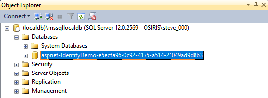

Introduction to Identity on ASP.NET Core
By Pranav Rastogi, Rick Anderson, Tom Dykstra, Jon Galloway, Erik Reitan, and Steve Smith
ASP.NET Core Identity is a membership system which allows you to add login functionality to your application. Users can create an account and login with a user name and password or they can use an external login provider such as Facebook, Google, Microsoft Account, Twitter or others.
You can configure ASP.NET Core Identity to use a SQL Server database to store user names, passwords, and profile data. Alternatively, you can use your own persistent store, for example Azure Table Storage. This document contains instructions for Visual Studio and for using the CLI.
Overview of Identity
In this topic, you'll learn how to use ASP.NET Core Identity to add functionality to register, log in, and log out a user. For more detailed instructions about creating apps using ASP.NET Core Identity, see the Next Steps section at the end of this article.
Create an ASP.NET Core Web Application project with Individual User Accounts.
In Visual Studio, select File -> New -> Project. Select the ASP.NET Web Application from the New Project dialog box. Selecting an ASP.NET Core Web Application with Individual User Accounts as the authentication method.
Note: You must select Individual User Accounts.

Configure Identity services and add middleware in
Startup.The Identity services are added to the application in the
ConfigureServicesmethod in theStartupclass:// This method gets called by the runtime. Use this method to add services to the container. public void ConfigureServices(IServiceCollection services) { services.AddDbContext<ApplicationDbContext>(options => options.UseSqlServer(Configuration.GetConnectionString("DefaultConnection"))); services.AddIdentity<ApplicationUser, IdentityRole>() .AddEntityFrameworkStores<ApplicationDbContext>() .AddDefaultTokenProviders(); services.Configure<IdentityOptions>(options => { // Password settings options.Password.RequireDigit = true; options.Password.RequiredLength = 8; options.Password.RequireNonAlphanumeric = false; options.Password.RequireUppercase = true; options.Password.RequireLowercase = false; options.Password.RequiredUniqueChars = 6; // Lockout settings options.Lockout.DefaultLockoutTimeSpan = TimeSpan.FromMinutes(30); options.Lockout.MaxFailedAccessAttempts = 10; options.Lockout.AllowedForNewUsers = true; // User settings options.User.RequireUniqueEmail = true; }); services.ConfigureApplicationCookie(options => { // Cookie settings options.Cookie.HttpOnly = true; options.Cookie.Expiration = TimeSpan.FromDays(150); options.LoginPath = "/Account/Login"; // If the LoginPath is not set here, ASP.NET Core will default to /Account/Login options.LogoutPath = "/Account/Logout"; // If the LogoutPath is not set here, ASP.NET Core will default to /Account/Logout options.AccessDeniedPath = "/Account/AccessDenied"; // If the AccessDeniedPath is not set here, ASP.NET Core will default to /Account/AccessDenied options.SlidingExpiration = true; }); // Add application services. services.AddTransient<IEmailSender, EmailSender>(); services.AddMvc(); }These services are made available to the application through dependency injection.
Identity is enabled for the application by calling
UseAuthenticationin theConfiguremethod.UseAuthenticationadds authentication middleware to the request pipeline.// This method gets called by the runtime. Use this method to configure the HTTP request pipeline. public void Configure(IApplicationBuilder app, IHostingEnvironment env) { if (env.IsDevelopment()) { app.UseDeveloperExceptionPage(); app.UseBrowserLink(); app.UseDatabaseErrorPage(); } else { app.UseExceptionHandler("/Home/Error"); } app.UseStaticFiles(); app.UseAuthentication(); app.UseMvc(routes => { routes.MapRoute( name: "default", template: "{controller=Home}/{action=Index}/{id?}"); }); }For more information about the application start up process, see Application Startup.
Create a user.
Launch the application and then click on the Register link.
If this is the first time you're performing this action, you may be required to run migrations. The application prompts you to Apply Migrations:

Alternately, you can test using ASP.NET Core Identity with your app without a persistent database by using an in-memory database. To use an in-memory database, add the
Microsoft.EntityFrameworkCore.InMemorypackage to your app and modify your app's call toAddDbContextinConfigureServicesas follows:services.AddDbContext<ApplicationDbContext>(options => options.UseInMemoryDatabase(Guid.NewGuid().ToString()));When the user clicks the Register link, the
Registeraction is invoked onAccountController. TheRegisteraction creates the user by callingCreateAsyncon the_userManagerobject (provided toAccountControllerby dependency injection):// // POST: /Account/Register [HttpPost] [AllowAnonymous] [ValidateAntiForgeryToken] public async Task<IActionResult> Register(RegisterViewModel model) { if (ModelState.IsValid) { var user = new ApplicationUser { UserName = model.Email, Email = model.Email }; var result = await _userManager.CreateAsync(user, model.Password); if (result.Succeeded) { // For more information on how to enable account confirmation and password reset please visit http://go.microsoft.com/fwlink/?LinkID=532713 // Send an email with this link //var code = await _userManager.GenerateEmailConfirmationTokenAsync(user); //var callbackUrl = Url.Action("ConfirmEmail", "Account", new { userId = user.Id, code = code }, protocol: HttpContext.Request.Scheme); //await _emailSender.SendEmailAsync(model.Email, "Confirm your account", // "Please confirm your account by clicking this link: <a href=\"" + callbackUrl + "\">link</a>"); await _signInManager.SignInAsync(user, isPersistent: false); _logger.LogInformation(3, "User created a new account with password."); return RedirectToAction(nameof(HomeController.Index), "Home"); } AddErrors(result); } // If we got this far, something failed, redisplay form return View(model); }If the user was created successfully, the user is logged in by the call to
_signInManager.SignInAsync.Note: See account confirmation for steps to prevent immediate login at registration.
Log in.
Users can sign in by clicking the Log in link at the top of the site, or they may be navigated to the Login page if they attempt to access a part of the site that requires authorization. When the user submits the form on the Login page, the
AccountControllerLoginaction is called.// // POST: /Account/Login [HttpPost] [AllowAnonymous] [ValidateAntiForgeryToken] public async Task<IActionResult> Login(LoginViewModel model, string returnUrl = null) { ViewData["ReturnUrl"] = returnUrl; if (ModelState.IsValid) { // This doesn't count login failures towards account lockout // To enable password failures to trigger account lockout, set lockoutOnFailure: true var result = await _signInManager.PasswordSignInAsync(model.Email, model.Password, model.RememberMe, lockoutOnFailure: false); if (result.Succeeded) { _logger.LogInformation(1, "User logged in."); return RedirectToLocal(returnUrl); } if (result.RequiresTwoFactor) { return RedirectToAction(nameof(SendCode), new { ReturnUrl = returnUrl, RememberMe = model.RememberMe }); } if (result.IsLockedOut) { _logger.LogWarning(2, "User account locked out."); return View("Lockout"); } else { ModelState.AddModelError(string.Empty, "Invalid login attempt."); return View(model); } } // If we got this far, something failed, redisplay form return View(model); }The
Loginaction callsPasswordSignInAsyncon the_signInManagerobject (provided toAccountControllerby dependency injection).The base
Controllerclass exposes aUserproperty that you can access from controller methods. For instance, you can enumerateUser.Claimsand make authorization decisions. For more information, see Authorization.Log out.
Clicking the Log out link calls the
LogOutaction.// // POST: /Account/LogOut [HttpPost] [ValidateAntiForgeryToken] public async Task<IActionResult> LogOut() { await _signInManager.SignOutAsync(); _logger.LogInformation(4, "User logged out."); return RedirectToAction(nameof(HomeController.Index), "Home"); }The preceding code above calls the
_signInManager.SignOutAsyncmethod. TheSignOutAsyncmethod clears the user's claims stored in a cookie.Configuration.
Identity has some default behaviors that you can override in your application's startup class. You do not need to configure
IdentityOptionsif you are using the default behaviors.// This method gets called by the runtime. Use this method to add services to the container. public void ConfigureServices(IServiceCollection services) { services.AddDbContext<ApplicationDbContext>(options => options.UseSqlServer(Configuration.GetConnectionString("DefaultConnection"))); services.AddIdentity<ApplicationUser, IdentityRole>() .AddEntityFrameworkStores<ApplicationDbContext>() .AddDefaultTokenProviders(); services.Configure<IdentityOptions>(options => { // Password settings options.Password.RequireDigit = true; options.Password.RequiredLength = 8; options.Password.RequireNonAlphanumeric = false; options.Password.RequireUppercase = true; options.Password.RequireLowercase = false; options.Password.RequiredUniqueChars = 6; // Lockout settings options.Lockout.DefaultLockoutTimeSpan = TimeSpan.FromMinutes(30); options.Lockout.MaxFailedAccessAttempts = 10; options.Lockout.AllowedForNewUsers = true; // User settings options.User.RequireUniqueEmail = true; }); services.ConfigureApplicationCookie(options => { // Cookie settings options.Cookie.HttpOnly = true; options.Cookie.Expiration = TimeSpan.FromDays(150); options.LoginPath = "/Account/Login"; // If the LoginPath is not set here, ASP.NET Core will default to /Account/Login options.LogoutPath = "/Account/Logout"; // If the LogoutPath is not set here, ASP.NET Core will default to /Account/Logout options.AccessDeniedPath = "/Account/AccessDenied"; // If the AccessDeniedPath is not set here, ASP.NET Core will default to /Account/AccessDenied options.SlidingExpiration = true; }); // Add application services. services.AddTransient<IEmailSender, EmailSender>(); services.AddMvc(); }For more information about how to configure Identity, see Configure Identity.
You also can configure the data type of the primary key, see Configure Identity primary keys data type.
View the database.
If your app is using a SQL Server database (the default on Windows and for Visual Studio users), you can view the database the app created. You can use SQL Server Management Studio. Alternatively, from Visual Studio, select View -> SQL Server Object Explorer. Connect to (localdb)\MSSQLLocalDB. The database with a name matching aspnet-<name of your project>-<date string> is displayed.

Expand the database and its Tables, then right-click the dbo.AspNetUsers table and select View Data.
Identity Components
The primary reference assembly for the Identity system is Microsoft.AspNetCore.Identity. This package contains the core set of interfaces for ASP.NET Core Identity, and is included by Microsoft.AspNetCore.Identity.EntityFrameworkCore.
These dependencies are needed to use the Identity system in ASP.NET Core applications:
Microsoft.AspNetCore.Identity.EntityFrameworkCore- Contains the required types to use Identity with Entity Framework Core.Microsoft.EntityFrameworkCore.SqlServer- Entity Framework Core is Microsoft's recommended data access technology for relational databases like SQL Server. For testing, you can useMicrosoft.EntityFrameworkCore.InMemory.Microsoft.AspNetCore.Authentication.Cookies- Middleware that enables an app to use cookie-based authentication.
Migrating to ASP.NET Core Identity
For additional information and guidance on migrating your existing Identity store see Migrating Authentication and Identity.